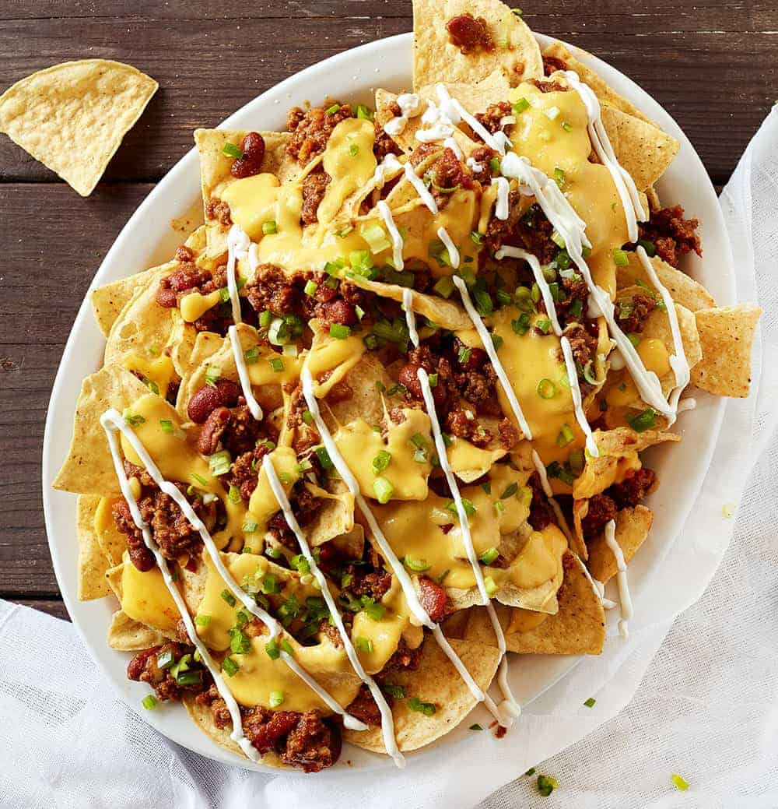

Nachos

Description
These homemade nachos are great for game day.
This recipe makes a huge meal-sized tray of nachos loaded with
taco-seasoned ground beef, refried beans, salsa, jalapeños,
and cheese.
Ingredients
- 1 pound of ground beef
- 3/4 cup of water
- 1.25oz package of taco seasoning mix
- 18oz package of restaurant style tortilla chips
- 1 cup shredded sharp cheddar cheese
- 15.5oz can of refried beans
- 10oz can of pitted black olives, drained and chopped
- 1 cup salsa
- 1 cup sour cream
- 4 green onions, diced
- 4oz can of sliced jalapeno peppers, drained
Directions
- Preheat the oven broiler. Set the oven rack about 6 inches from the heat source.
Line a baking sheet with aluminum foil
- Gather all ingredients
- Cook and stir ground beef in a skillet over medium
heat until meat is crumbly and no longer pink, 5 to 10 minutes. Drain excess grease. Stir in water and taco seasoning mix;
simmer until beef mixture has thickened, 8 to 10 minutes.
- Spread tortilla chips on the prepared baking sheet.
Top with Cheddar cheese, then dot with refried beans and ground beef mixture.
- Broil in the preheated oven until cheese is melted, 3 to 5 minutes.
Top nachos with olives, salsa, sour cream, green onions, and jalapeño peppers.